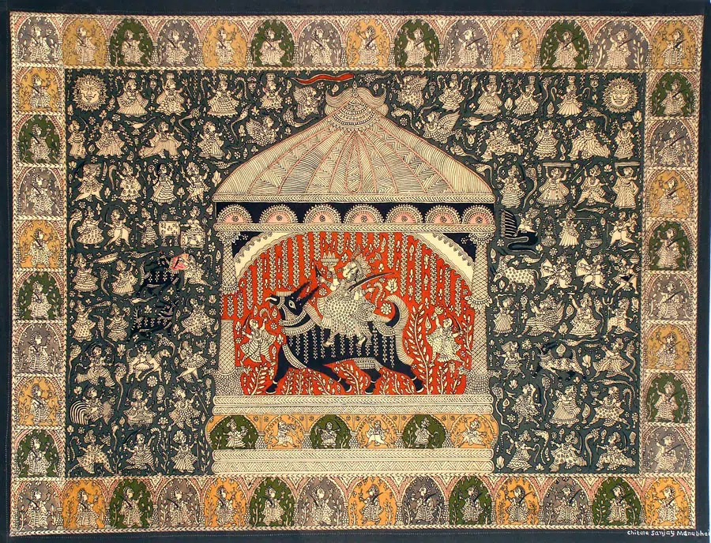

52 Incredible Heritage of Indian Folk Art that We Must Protect and Preserve for the Next Generation
The Indian culture is rich and diverse with many beautiful things to see. But the best part about India is the folk art. India has a rich tradition of folk art which has been passed down through generations. Indian folk art has always been an important part of the culture. It’s not just an artist’s expression but also a way to portray their stories, memories, values and beliefs. Along with all the amazing things that India has to offer, it also has its own set of problems. The problem that affects Indian Folk Art most is that people are losing interest in it because they don’t see much value in it anymore. Indian folk art is made up mostly of two distinct forms: applied and decorative arts. Applied arts refer to the crafts that are created with a specific function and decorative arts refer to those that are made for display purposes. Both types have played a vital role in India’s economy and culture since ancient times. Here are my top 52 Indian folk arts that we all must appreciate and try to revive.
1 - Aipan Art (Uttarakhand)
Aipan art originated from Almora in Uttarakhand, which was founded during the reign of the Chand dynasty. It
flourished during the reign of the Chand dynasty in the Kumaon region.
The Chand dynasty was a Hindu Rajput dynasty that ruled much of the northern Indian subcontinent around the
10th
century.
The art form has many regional variations. It’s origins are in the North Indian state of Uttarakhand. Aipan
art is
an ancient style of painting depicting mostly Jain, Hindu and Buddhist themes. The designs and motifs in
Aipan Art
are motivated by the beliefs of the community and various aspects from nature.
Some people believe that writing on empty walls with a reddish paint brings about good fortune. Others
believe that
this is just an aesthetic custom which has no meaning, but it’s still pretty cool.
The creation of rice flour art has deep cultural and religious significance in Kumaon. It is often found on
the
floor and walls of Puja rooms, as well as at entrances to homes. This form of artisanry is mostly practiced
by women
from this region.
2- Assamese Miniature Painting (Assam)
Assam has a rich history of its tradition, art and culture and it flourished in the 16th century. The Bhakti
movement spread in medieval times, thanks to Sankaradeva’s work (1449-1569) and helped create a culture of
lively
paintings.
Assamese Miniature painting is a technique in which art is painted on a small surface. The size of the
painting
varies from 1 inch to 24 inches in height and 8 inches to 12 inches in width. It is often made on ivory,
wood, metal
or paper
Assamese manuscript paintings may be grouped under the following categories. 1. Sattriya or Sankari style,
2.
Gadgayan or Royal Style 3. Darrangi or Folk Style 4. Tai Style.
The process of making an Assamese miniature starts withdrawing outlines for the composition on paper. The
outlines
are then filled with color using water-based paints or gouache. The final step involves inserting miniscule
details
to the entire painting after it has dried up completely.
It is said that the latex of Kendu tree duck’s eggs or tamarind seeds were used as adhesive with all the
colours.
But the fruit of Wood Apple was used as the best adhesive. The proportion that you should mix the adhesive
to colour
is illustrated.
3- Bhil Painting (Madhya Pradesh)
The Bhil Tribe are native to western and central India. Today, there are fifty of them, which makes them the
third
largest community in India. The Bhil tribe once used to be mainly hunters back in time and they were skilled
archers
too.
They have long taken to agriculture and some have migrated to large cities taking up masonry, road making
and other
manual labour.
Art is integral to the Bhil community. Song, dance and painting, accented with feasting and drinking is used
to mark
events, store memories and fight despair and disease. Steeped in rituals, symbolism and tradition, the rich
textures
of their paintings connect them to nature and the Adivasi life that is their legacy.
Bhil paintings are a form of folk art, an art produced by the common people or folk artists from Bhil
community. It
is believed to be the oldest surviving form of Indian painting and has been practiced for over two
millennia.
The Bhils are a large tribal community residing in central India (Madhya Pradesh). They can trace their
ancestry to
Eklavya and Valmiki, who, they say, was actually from their community.
Distinctive Dots: Stories, prayers, memories and traditions are painted onto plain backgrounds in a symphony
of
multihued dots. The first step to learning the art for many Bhil artists began with mastering the dots.
4 - Bhojpuri Painting (Uttar Pradesh)
One of the most popular forms of art in Uttar Pradesh, Bhojpuri Painting has played a major role in the
development
and sustenance of art culture. Dating back to 1300 BC, it is even older than King Ashoka himself!
It’s difficult to gauge the exact origin of this art form. Certain facts from the past make us believe that
these
paintings surfaced during the reign of King Ashoka. Bihar is always being under the major hotspot for
education,
culture, and power.
Bihar is the 9th largest state in India. It is a historical and ancient land. The Bihar region was
historically
known as Magadha, one of the 16 Mahajanapadas of ancient India. Many great Buddhist scholars and monasteries
lived
in this land.
Bihar is a state with a rich heritage of culture and knowledge. It has been an education hotspot for many
centuries
5 - Cheriyal Scroll Painting (Telangana)
The Cheriyal Scrolls paintings are made in Hyderabad. They are made by ragi dough that is shaped into
scrolls and
then hand painted with vegetable colors. The scrolls depict scenes from the Ramayana, Mahabharata or other
epic folk
stories.
The traditional art form was inseparable from the job of the story-telling, balladeer community known as
Kaki
Padagollu.
The scroll would go up to 40-45 feet long. It would usually be about 3 ft wide and written in vertical
format.
Traditional scrolls are set horizontally, meaning it shows the story spread across the page.
These canvas scrolls made from Khadi are hand-painted in a style unique to the local motifs and iconography.
Characterised by a dominance of the colour red in the background, these brilliantly hued paintings even
received
Geographical Indication Status in 2007.
Painted in panels as a narrative, these are like comic strips from the past, depicting scenes and stories
from
Indian mythology and epics. Distinct in their style they immediately convey age-old Indian traditions and
customs in
a beautiful and engaging manner.
6 - Chittara Art (Karnataka)
Chittara Art is an autochthonous art practice. It is a ubiquitous cultural phenomenon of the Deevaru
community, a
matriarchal and an agrarian community of nature worshipers, residing in an around Sagar.
It is engaged primarily by the Women folk of the community as a socio-cultural practice, which embodies a
microcosm
of socio-cultural dynamic.
Nestled in the ranges of verdant western ghats of North Canara lives Deevaru community. Chittara drawings
are
intricate patterns, that represent the auspicious ceremony and rituals of life, symbolized in geometric
patterns.
This requires a certain understanding of ratios and proportions, which the women of the community have been
using
with great dexterity. This folk art was and still is a part of their day-to-day life. It was never a
profession, but
a practice that has artistic and socio-cultural value.
The paintings are usually 2 – 3 feet in size, aesthetically refined, made of symbols representing their
physical
environment. They use eco-friendly natural resources like ground rice paste for white colour, roasted rice
for
black, yellow seeds (Gurige) red earth and the brushes are made up of Pundi Naaru.
7 - Chitrakathi Painting (Maharashtra)
Term “Chitrakathi” comes from two words: “chitra” meaning picture and “katha” meaning story. A
Chitrakathi is
someone who tells stories, with a visual aid. Tribal life has a long-standing tradition of such
storytellers.
Chitrakathi is an occupational caste whose traditional livelihood was to narrate stories aided with
pictures
sojourning various places.
Chitrakathi is a combination of two words from the Sanskrit language: chitra meaning picture and katha
meaning
story. With this app, a Chitrakathi is the one who narrates stories with a visual aid. There’s a
long-standing
tradition of this in tribal life
This art form, called Chitrakathi, is practiced within the Thakar tribe in Maharashtra. They are
wandering musicians
who perform the traditional stories at different villages.
They would make a series of single sheets of paintings. All paintings belonging to one story were kept
in a bundle
called a ‘pothi’. Painting themes include local versions of Ramayana and Mahabharata as well as
mythological
stories.
8 - Dokra Art, West Bengal
Dokra Art, Dokra Damar tribes are the main traditional metalsmiths in West Bengal and Odisha, whose
technique of lost wax
casting is named after them.
Dokra Art (also called Dhokra) named after Dhokras tribe, a nomadic group that extends from Jharkhand to
the
southern state of West Bengal and the eastern state of Odisha. They can be traced back to a few hundred
years ago
when they traveled extensively, going as far as Kerala and Rajasthan.
Dokra (also spelt Dokra) is non–ferrous metal casting using the lost-wax casting technique. This sort of
metal
casting has been used in India for over 4,000 years and is still used. One of the earliest known lost
wax artefacts
is the dancing girl of Mohenjo-daro.
There are two main processes of lost wax casting: solid casting and hollow casting. While the former is
predominant
in the south of India the latter is more common in Central and Eastern India.
Solid casting is one of the most common techniques in creating an impression mould and only requires a
solid piece
of wax.
To create an intricate, high-quality Dokra Art sculpture, the artist creates a model in clay. This is
coated with
wax so it can be cast in metal. The lost-wax process of wax casting involves two phases: solid casting
and hollow
casting.
9 - Kolam Floor painting (Tamil Nadu)
A Kolam is a geometrical line drawing made up of straight lines, curves and loops, constructed around a
dot grid
pattern. Kolams are generally considered auspicious symbols and are believed to bring prosperity to
homes.
The kolam is made by drawing concentric circles around a central dot. The number of circles that are
drawn denotes
the number of evil spirits that can be eliminated from the premises. Kolams are generally drawn on clean
floors with
rice flour, jaggery, or chalk powder.
Kolams are typically drawn when the surface is still damp so that the design will hold onto it better.
Instead of
rice flour, occasionally white stone powder is used to create kolams. They also use cow dung to wax down
their
floors during these occasions.
In the olden days, the lines were drawn using a
coarse rice
flour that ants could eat without having to walk too far or too long. The rice powder also invites birds
and other
small creatures to eat it, thus welcoming other beings into one’s home and everyday life: a daily
tribute to stark
co-existence.
Indian homes, welcome Lakshmi and the prosperity and wealth she brings. Decorative patterns range from
very
geometric designs that use repeating shapes around a square of dots to more fluid artwork that fills the
entire
space.
10 - Godna Painting (Chhattisgarh)
Godna Art or Tattooing has been a part of Indian culture for a very long time. It is popular in tribal
societies as
well as those in the North & Central regions. In Northern and Central India it is called “Godna”
tattooing which was
observed as being typical of primitive tribes groups.
Godna art is the term used to describe permanent ornamentation of the body with tattoos. It is mostly
practiced in
Chhattisgarh state of India. Gonda, like other forms of tattooing, needs artistic
dexterity and
precision.
The main purpose of tattooing one’s body is to obtain acceptance from society. Sometimes tattoos are
also done on
areas of the body that are not readily visible. The art itself provides an ideal canvas for originality
and
self-expression, which is what everyone wants.
Godna art is
deeply rooted
in their spirituality and belief. They believe ornaments are mortal and human made like humans
themselves.
Tattoos are commonly used as permanent body decorations and often emblematic of a certain group or
identification.
The tribal women of Chhattisgarh, India decorate their bodies with tattoos called “Godna.”
Some tribal people have traditional tattoos. Tribal beliefs say that it’s often the only decoration that
remains
with a person after death.
11 - Gond Painting (Madhya Pradesh)

Gond painting has been practiced by the Gond tribe of Madhya Pradesh, India. Generally painted with dots
and dashes
or short lines, their illustrations feature complex patterns.
A type of Mural painting, done beautifully on the walls and floors as part of festival celebrations.
Primarily using
natural pigments for colors from vegetables, flowers, cow dung or mud etc
Gondi culture is the main background for the designs and patterns selected. Gondi is an Indian tribe
that lives in
the regions of Madhya Pradesh, Assam, and Andhra Pradesh. The unique feature of Gond painting is the
fusion of
living creatures with nature, they all seem connected.
The story of Gond painting is not complete without mentioning young Gond Tribal Artist Jangrah Singh
Shyam, who
transformed these mural paintings to canvas and paper in 1981 and tragically passed away in Japan under
mysterious
circumstances at the age of 39, promoting Gond Art in Japan.
His style of Gond painting on paper and canvas is also widely known as Jangarh Kalam. Gond tribal artist
Jangrah
Singh Shyam, is a master of the Gond tradition. He creates contemporary art with natural materials such
as bamboo
and leaves.
12 - Jadopatia Painting (Jharkhand)
The Jadopatia painting of Jharkhand is a type of folk art that has been practiced in the Indian
state of Jharkhand
for centuries. The paintings are made with natural pigments on cloth, metal, wood, or leaves.
These are generally practiced by the Santhals, where artisans make scrolls called Jado or Jadopatia
which are drawn
with natural inks and colours. They are used to help people tell stories in the form of
illustrations. They depict
scenes from the faraway afterlife, beliefs in tiger Gods etc.
The Jadupatua paintings are vertical scroll paintings that were performed on cloth in earlier days
but later these
paintings were done on papers.
The scrolls of traditional horizontal scrolls were made into vertical scrolls and the length of the
painting was
then reduced to allow more than one scene to be shown. The use of color is very subdued and mainly
limited to earth
tones such as brown, yellow, and orange
Most ancient scrolls were made from waste paper.
The scrolls were made up of sheets of paper that were either glued or sewn together and often
wrapped in fabric so
as to protect the scroll’s contents.
The scroll was secured with a string at each end. Pieces of bamboo were sewn in to act as rollers,
so the scroll
could be wound tightly around them.
Some scrolls were short and had two or three panels, while others could have 14 or more.
13 - Kalamezhuthu Art (Kerala)

Kalamezhuthu is a traditional art form that originated in Kerala. The art form uses the patterns of
rice flour paste
and water colours on a cloth to create elaborate paintings. The whole process of Kalamezhuthu is
done by using the
hands only and it cannot be erased or reused, which makes it an exclusive and exquisite art form.
‘Kalamezhuthu’ is a type of medieval Hindu art that was popular in the south of India from around
1750-1850. The
word means ‘drawing pictures’, and pictures of gods and goddesses became the central theme.
A lot of religious art is done in the form of ritualistic drawings – for example, pictures of gods
created by using
coloured powders. It is believed that such depictions are there to ‘welcome’ gods.
The art form is accompanied by a long chant sung before the performance starts. It’s done on the
floor, which is
what gives it its meaning in this context. The artform sees all of Earth as one large canvas to
paint on.
Kalamkari use natural colors from materials such as charcoal, turmeric, leaves and rice. White is
derived from rice,
black from charcoal, yellow from turmeric and green from leaves. Red can be made by mixing other
colors.
During November & December, you can see Kalamezhuthu performances at many different Devi temples in
Kerala.
14 - Kalamkari Painting (Andra Pradesh and Telangana)
The term “Kalamkari” is said to have come from two Tamil words, “Kalam”, which means pen, and
“Kari”, which means
craftmanship. Kalamkari Painting became popular under the patronage of the Golconda sultanate.
Kalamkari is the Oriental word for the Indian village of Kalamkari where this type of hand-painted
or block-printed
textile was originally produced. Now, Kalamkari paintings are also made in Isfahan (Iran), Andhra
(India) and
Telangana (India).
Only natural dyes are used in Kalamkari, which involves 23 steps.
There are two distinctive styles of Kalamkari art
in India – the Srikalahasti style and the Machilipatnam style.
To create Kalamkari, the cloth is first steeped in a mix of buffalo milk and astringents. This is
then dried under
sunlight. Afterwards, the colors for red, black, brown and purple are outlined with a mordant before
being placed on
the cloth.
To dye a blue part of a cloth the next step is to cover other parts in wax and then immerse it in
indigo dye. After
the cloth is out of the indigo, scrape off the parts covered by wax and paint on any other areas
needed. This is similar to Indonesian batik
To create contours for a design, artists use a pen which they created by attaching fine hair to the
pointed end of
bamboo or date palm.
15 - Kalighat Painting (West Bengal)
The Kalighat paintings are a tradition of religious art prevalent in West Bengal, India. The
paintings of the Hindu
goddess of the same name, Kali, are painted on cloth and can be seen on roadside stalls and shops.
These paintings
depict various scenes from Hindu mythology and people believe that they bring good luck and
prosperity.
The Kalighat paintings originated from being items people would buy when they visited the Kalighat
Kali Temple in
West Bengal, India. The paintings have been around since the 19th century and have developed a lot
over time.
The Kalighat paintings started off with illustrations of Hindu gods & deities, but quickly
diversified to show a
variety of topics from everyday life. In the 19th century, traditional scroll paintings were
flourishing in Bengal.
These paintings were popular in rural areas and were the only form of art that could compete with
European styles.
These paintings were done on this kind of material. They usually depict the gods and goddesses as
well as scenes
from epics like Tulsidas’ Rama Charita Manas. The artists depicted medieval epics on scrolls and
travelled around
singing the stories to listeners. They were called patuas.
16 - Kangra Painting (Himachal Pradesh)
The Kangra paintings are an art form of Kangra, India. It is said that the craft was born in the
17th century and it
has been passed down from generation to generation. It is still practiced today at various places in
and around
Kangra Valley.
One of the most famous styles of Indian art, Basohli, died out in 18th century. However since then
many paintings
have been created in this style that helped it become more popular than the Pahari art.
This style reached its peak during the reign of Maharaja Sansar Chand Katoch (r.1776–1824) who was a
huge supporter
of Kangra art. The paintings he commissioned where large in size and fueled the work for others
providing them with
more commissions.
Maharaja Sansar Chand was an ardent devotee of Krishna and often commissioned artists to paint
scenes from Krishna’s
life. The main subject in Kangra paintings is Shringar (an romantic sentiment).
Kangra painting is most well-known for its graceful lines, bright colours and detailed décor- it
follows a style
similar to that of Ajanta.
This style of painting used a fine type of brush that was made from squirrel hair. In addition to
using pure colors
to paint the Kangra region, the colors have retained their vibrancy over time.
17 - Kavad Painting (Rajasthan)
“The enjoyment of stories has been around since the dawn of civilization. We love listening to new
stories, old
stories, and especially ones about gods who punish the wicked.”
There are plenty of storytellers in the world and one form that stands out is a mobile storyteller,
who carries
beautiful stories in a colorful house-like structure. This is the kavad.
The Kavad is a portable wood-carved shrine that is traditionally used to house and worship Hindu
gods and goddesses.
They are usually beautifully carved and painted panels in a traditional style.
The Kavad has been the prized
possession of the Suthar community in Mewar for over 500 years, with several families claiming to be
its
originators.
Suthars are typically made from wood cut from the Neem tree and traditionally red was used as the
color. However,
over time this has changed to match customer demand.
The word Kavad probably comes from the word “Kivaadh” which means door. It can after-all be seen as
a collection of
doors or doors that open the layers of a story.
18 - Kerala Mural Painting (Kerala)

Kerala Mural Paintings are one of the most well known and distinctive forms of art from Kerala,
India.
The Kerala mural paintings are a form of temple art that have been practiced in Kerala for over 2000
years and has
been preserved through generations by local artists. Although they have been influenced by western
techniques, they
have retained their Indian roots.
They have a close connection to the daily life of the people, and express the religious and cultural
traditions of
Kerala. The art form can be seen in religious & cultural traditions of Kerala, and depicts scenes
from the
traditional Puranas as well as daily life of local people.
Kerala’s own style of murals has been seen in the Thirunadhikkara Cave Temple and Tiruvanchikulam.
These murals have
been dated to around 400 A.D.
A mural is a large painting on a wall that often depicts a story. The word is the Latin word for the
word ‘wall’,
which correlates with them being painted on either side of a wall.
Traditional murals are painted with five colors, which are red, yellow, green, black and white.
These all
traditionally come from natural substances that the painter has on hand. Red, yellow and white
paints were
traditionally made from two sources: red laterite and white lime. Black paints were the result of
oil-lamp soot
deposits.
19 - Kishangarh Painting (Bani Thani) (Rajasthan)
Rajasthani paintings are divided into different schools, one of which is the Kishangarh School of
Art. Kishangarh
Painting is a style of Indian painting that originated in the city of Kishangarh, India.
The school has a distinct appearance with a religious atmosphere. The facades of the buildings were
aggressive and
distracted from the sublime, while because of their delicate form, they responded to female heads
with strong facial
features that were drawn in a very different way from previous generations.
Artists of Kishangarh created beautiful, intricate miniatures under the rule of Maharaja Savant
Singh, the
18th-century Rajput king.
He was a devotee of Krishna and this influenced his rule. Therefore, most paintings were
based on the romantic stories of Krishna and Radha.
The Radha Krishna in these paintings were, in fact, used to represent Maharaja Savant Singh and his
mistress and
later his wife, Vishnupriya. The paintings are titled “Radha Krishan” because they depict the story
of their love.
As the wife of Maharaja Savant Singh, Vishnupriya adorned herself with exquisite makeup to represent
her royal
stature.
Bani Thani, which is a Mughal miniature painting, has been speculated to be the influence behind
Kishangarh facial
types.
20 - Kondapalli Bommallu (Andra Pradesh)
Kondapalli Toys are made from wood and are from the Indian state of Andhra Pradesh.
Wooden painted toys from Kondapalli are famous for their finely crafted figures of animals and
people. The wood is
locally sourced and adds a touch of aesthetics to rooms with their spindly figures. These toys have
carved out a
niche of their own in the world of handicrafts.
Artisans with nimble fingers carve wooden characters with aplomb, as the characters emerge from
light soft wood. The
wooden piece is heated to make it moisture-free. For each part of the carving, a different carved
design is made.
The sections are then glued using an adhesive obtained by crushing tamarind seeds.
The traditional craft of crafting remains popular and is an important way for many people to earn a
living.
Craftspeople, known as Aryakhastriyas, who form the ‘Nakarshalu’ family and weave these yokes were
mentioned in
Brahmanda Purana, which was compiled over 400 years ago.
The artisans are said to have migrated from Rajasthan in the 16th century to Kondapalli and claims
their origin to
Muktharishi, a sage endowed with skills in arts and crafts by Lord Shiva.
Water colours and oil pastels are the two different types of materials typically used to paint toys
or figurines.
21 - Kurumba painting (Tamil Nadu)
Kurumba painting (Tamil Nadu): Kurumbas are one of the five communities which occupy various
altitudinal zones of
the Nilgiri ranges, the Kurumbas are believed to be the descendants of the Pallavas.
These Indigenous tribes are known for their healing power, hunting skills and knowledge of medicinal
plants.
In subject, the Kurumba art style is quite similar to the Warli and Saura folk painting styles. The
key difference
between these three is in their style. Whereas both Warli and Saura depict elaborate figures, a
Kurumba artwork has
a cleaner geometric style.
The Kurumba painting is characterized by its concentric arrangement of colours. It features more
than three colours
The figures in the paintings seem to be dancing even though they are most likely performing
different tasks.
Consider the level of detail in how they are drawn.
The figures featured in the painting are recognized by their bunned hair. One group is known as the
Warli and the
other, Saura. These two groups have two bodies but these figures only feature one almost rectangular
shaped body.”
Unlike the other folk art of Warli and Saura, animals are not often seen in Kurumba paintings. This
is quite
different than these other two forms of folk art which contain a lot animal imagery.
22 - Kutch Lippan Art (Gujarat)
The Kutch Lippan Art is a form of art that originated from the Kutch region in Gujarat. This form of
art is a result
of a fusion of the traditional Kutch crafts with British and Indian techniques.
Lippan art is a traditional craft native to Gujarat. The mud and mirror work features materials such
as clay and the
dung of the local camel population, which allows for an interesting effect that keeps homes cool.
Though they’re originally from Kutch, these scintillating murals can be found on the outer walls as
well. You can
notice these murals on both exterior and interior walls. They provide a type of beauty to a
generally harsh way of
life in the region.
Women from the Rabari community are typically in charge of mud and mirror work. They don’t trace or
draw a pattern
before beginning the work. This has made them especially skilled at this art form.
Rabari is the pastoral community from Kutch who live in villages. They live in houses called Bhungas
which are
designed to accommodate their practical needs.
This art form has a hoary past as no records are available to trace its origin. Various communities
in Kutch do
mud-washing in their own distinct style.
A common practice in Kutch, India is the art of mud-washing. Mud-washing is an ancient form of folk
art practiced by
various communities around the world.
23 - Leather Puppet Art (Andra Pradesh)

Andhra Pradesh is famous for its traditional leather puppet art and craft. The leather puppets found
in this state
hail from the traditional folk and cultural expression of the region, known as Leather puppetry.
A traditional form of shadow puppet theatre practised in Andhra Pradesh, it is known as tollubommalu
or
tollubommalatta. The name is derived from the Telugu word for leather, tollu and dolls or figurines,
bommalu.
Places like Nimmalakunta in Ananthapur district, Narsaraopet in Guntur district and D.C. Palle in
Nellore district
are considered the main centers of leather puppet industry in Andhra Pradesh.
The variety of people who participate in this form of craft is
mostly the
Marathi-Balija culture.
Creating a shadow puppet traditionally takes around 30-40 days. The amount of time required will
vary depending on
the complexity of the puppet.
The first step of this process is to buy fresh goat hide from the weekly meat market. Next, it
should be soaked in
cold water for 2-3 hours before it can be cut and flattened with a heavy object like a hammer. To
create leather,
the animal’s skin is washed in warm water and dried in the sun. Once it is dry, it must be cut
according to product
requirements.
24 - Mandala Art
Mandala is a Sanskrit word that can translate to “circle” or “discoid object.” These geometric
designs have deep
symbolic meaning in Hindu & Buddhist cultures.
Mandalas are representations of various aspects of our universe which are used as instruments of
meditation. They
are also symbols of prayer, most notably in the East Asian countries, China, Japan and Tibet
Around 560 BC, Gautama became increasingly aware of human suffering and left his kingdom in order to
attain
enlightenment through meditation and thoughtful action.
Buddha preached his philosophy across parts of India and established the first sangha, a Buddhist
community of
monks.
According to legend, Buddha began preaching his philosophy across parts of India, where he
attracted
followers and eventually established the first Buddhist community of monks.
We first learn about mandalas through the travels of Buddhist monks who shared practical, moral
pursuits with
others. Through them, it spread to other Asian regions including Tibet, China, and Japan by the 4th
century.
The use of mandalas in Buddhist, Hindu, and various other religions is documented. Some painters of
the spiritual
craft were pious individuals who were commissioned for their work by a patron. They worked seated on
the floor with
a painting propped on their lap or in front of their crossed legs.
25 - Mandana Art (Rajasthan)
Mandana Painting is a type of tribal art that has become popular in recent years. It has been around
for centuries
and used by traditional Meenas people.
Respect to writing records, the origin of Mandana paintings can be traced back to the Vedic age,
1500 to 500 BCE.
Resembles with the design found in Mandana art and its relationship with color & symmetry are
well-known. The lack
of recorded evidence is replaced by theories that state Mandana paintings’ origin can be seen in its
similarities to
other recordings.
Vastu purasha mandalas are altars of Vedic pujas and the architecture of ancient Vedic temples.
The core beliefs of
drawing mandala paintings and art on the walls and floors are to welcome divinity into the house and
keep away from
evil forces.
“Mandana” translates to “drawing” in the language of Gujjar Bhakha and may also be derived from
“Mandan”, which
means “decorate.”
The making of Mandana paintings is a unique process, which marks the beginning with clay and cow
dung. Traditions
and cultures are then integrated into a simplistic painting that is both attractive and
eye-catching.
The brushes used for this artwork are made from a combination of twigs, cotton & squirrel hair.
Local paint colors
consist solely of red & white, which is what makes them unique. Their source is chalk or brick that
can be found in
abundance in the region.
26 - Madhubani Painting (Bihar)
Madhubani painting, also known as Mithila painting is a traditional Indian folk art that uses
geometric patterns,
contrasting colors & line drawings.
The painting dates back to the time of Raja Janak, a king in a Mithila. He had a daughter named Sita
who was married
to Lord Ram. To celebrate her wedding, Raja Janak asked his subjects to decorate their city in
beautiful ways.
In the recent years, artists have been painting murals with geometric patterns on walls all around
the city. They
depict some rituals of weddings, births and celebrations.
Historically, Madhubani painting was passed down from generation to generation in the family of
Mithila Region. The
five distinctive styles are Bharni, Kachni, Tantrik, Godna and Kohbar.
Madhubani paintings are always two-dimensional and come with no empty spaces, usually filled with
drawings of
flowers, animals, birds, and other geometric designs.
These paintings are traditionally produced on freshly plastered wall surfaces or floors of huts, but
now they are
also created on cloth, handmade paper or canvas. The paste required to make them usually contains
powdered rice.
This painting is created with a variety of tools and naturally-made dyes. It features colourful
geometric patterns
which are pretty eye catching, so it’s easy for anyone to see.
27 - Mata Ni Pachedi (Gujarat)

‘Mata Ni Pachedi’ literally means ‘behind the mother goddess’ and was worn as a draping that
constituted the temple
of worship for her. These textiles are sacred and act as a backdrop for daily rituals.
Mata ni Pachedi is also called the Kalamkari of Gujarat because of its resemblance to the Kalamkari
art of South
India, which is also done with a pen made of bamboo.
The story goes that when the nomadic Vaghari community from Gujarat, who worship Mata, were not
allowed to enter
temples, they instead created their own places of worship with illustrations of the Mother Goddess
(Mata) on pieces
of cloth.
Devipujaks are landless labourers. Their main livelihood comes from stone-cutting work or selling
cattle, goats,
vegetables and datan-twig toothbrushes. Their main deities are Meldi Mata, Kalika Mata, Khodiyar Maa
and Bahuc.
The Vaghris also believe in animal sacrifice for various rites where the consumption of meat and
alcohol seems to be
culturally accepted.
28 - Masan Painting (West Bengal)
MASAN PAINTING
You are no doubt aware of the Hindu festival of ‘Masan Pooja’. This is still practiced by the
Rajbanshi tribe,
particularly in North Bengal. They believe that Masan Devta exists as a ‘rudra’ god. This might seem
at odds with
other Hindu celebrations but it should be done nonetheless.
That’s why people suffering from this think that ‘Masan Devta’ is responsible. They go to the
occultists who
sometimes scare the spirit away, other times drive it away.
The history of Masan deities is linked to the spread of ancient Buddhist religion of Tibet. They
were neither
considered as gods or demons and they were meant for worshipping near crematoriums.
The word ‘masan’ is derived from the word ‘shashan’ in Bengali. An ethnic group-the Rajbonshis are
the main patrons
of this art form that they call masaņ chitrakala.
The early representations of the Masan deities were rendered in silk paintings that resembled
Tibetan thangkas or
paintings on cloth. They were said to have healing powers and the Masan paintings were often used
for treatment.
Since the closing of the Silk Route in North Bengal, Tantrik Buddhism has lost influence and is now
limited to
Jalpaiguri, Darjeeling & Coochbehar.
29 - Meenakari Painting (Rajasthan)

There was no tradition of metal work in India before the Mughals. Many centuries ago, a Mughal ruler
known as Raja
Man Singh brought skilled artisans with him from Lahore and set them up in Jaipur.
The Meenakari work in India is a tradition with a long history. The art form originated from
Rajasthan.
Subsequently, Meenakari work took roots in India and Jaipur went on to become the hub of Meenakari
work in the
country ever since.
Meenakari is a technique that takes a lot of skill to do. It’s performed with a metal object that’s
attached to a
lac stick & then detailed designs are etched or engraved into it. This leads to creating intricate
pieces of art.
Enamel dust of the desired color is poured along the design and the groove’s heat melts the enamel
to a liquid form.
This process is repeated again and again with different colors until a final product is created.
Generally, white is laid down first and red last. After the final color has been fired it is cooled
and buffed with
agate to add depth. The underlying different colors determine how light plays off of the object.
Both silver and gold are used as a base for Meenakari. Silver work the best with enamel because it’s
a softer metal.
30 - Mysore Ganjifa Art (Karnataka)
Ganjifa is an ancient Indian card game that was popularized during the Mughal era. Ganjifa cards are
believed to
have arrived in India through Persia, then widespread across Europe before settling in India.
Ganjifa used to be called “Ganjifa” in Persian, and that means cards. The word Ganjifa is derived
from the Persian
word ‘Ganj’, which refers to money and treasures. It was a common, leisurely practice for the
aristocrats to involve
stakes in the game. Mysooru Ganjifa was extensively patronized by the Mysore Royal Family.
One theory is that the Indian game of Kreeda Patra was renamed Ganjifa when it was brought to other
parts of the
world.
This is because Kreeda Patra is, in fact, an Indian card game. While it has been popularly played in
the
Telangana and Andhra regions of India for centuries, it’s only recently gained popularity around.
However, under the Mughal rule during the 16th-18th century, Kreeda Patra cards became much more
elaborate and grew
in popularity. These cards were renamed Ganjifa and ultimately became a royal amusement for this
period of Persian
and Arabic influence in India.
Ganjifa became popular under the rule of Maharaja of Mysore, Mummadi Krishna Raj Wadiyar, and is
sometimes also
known as the “Mysore ‘Chada’ Ganjifa” type.
King Akbar helped to create Ganjifa as a specific board game and to promote its integrity.
31 - Mysore Painting (Karnataka)
Mysore Painting is a form of classical South Indian painting that evolved in the Mysore city of
Karnataka. It’s at
its zenith under the patronage of Wodeyars, Mysore being under their reign.
The art of the Mysore school reached its peak during the rule of Raja Raja Wodeyar I. The occupation
of artists
dispersed after his death though, and the school ceased to exist.
Mysore paintings are often mistaken for Tanjore paintings, because the colors are very similar at
first glance.
However, closer inspection will reveal that Mysore paintings have finer brush work & more delicate
colors, while
Tanjore paintings have a rougher, more bold style with broader brush strokes.
In Mysore paintings, gesso is a low relief, intricate substance that is used in the background of a
painting. This
helps to bring out details such as clothes, jewelry and architectural features. Whereas in Tanjore
school gesso has
a lot of relief and is typically used for depictions or images that have deeper meanings or symbols
behind them.
The process of producing a Mysore painting typically follows a number of steps. The first step
involves making a
sketch on the basis, usually with the help of a preliminary sketch drawn with ink or charcoal or
pasting cartridge
paper on to a wooden base. Then paste is made of zinc oxide and Arabic gum, known as ‘gesso paste’.
32 - Mughal Paintings
Mughal Painting, also known as Persian painting, was an art tradition in Persia (modern-day Iran),
mostly during the
Mughal Empire. It is often considered a part of the wider Persian miniature tradition, although the
Indian
influences are very strong.
Painters would paint scenes on miniatures which could either be single or multiple scenes. This form
of art emerged
from Persian miniature paintings and was used heavily by the Mughal Empire during the 16th century.
In Mughal painting, patronage from ruling emperors led to a its development as a court art. The art
began to decline
when the rulers lost interest. The subjects mainly come from a secular perspective, such as
illustrations to
historical texts and Persian & Indian literature, portraits of the emperor and his court, studies of
natural life,
and genre paintings.
The school had its beginnings during the reign of Emperor Humayun from 1530-40 and 1555-56. The
emperor invited two
Persian artists, Mir Sayyid Ali and Khwaja Abd al-Samad to join him in India. The earliest and most
important
undertaking of the school was a series of large miniatures of the Dāstān-e Amīr Ḥamzeh, undertaken
during the reign
of Akbar (1556–1605) which, when completed, numbered some 1,400 illustrations of an unusually large
size. Of the 203
that have survived, the largest number are the Austrian Museum of Applied Art in Vienna.
33 - Nirmal Painting (Telangana)
Nirmal Paintings are a popular form of Indian folk art done in Nirmal in Nirmal District, Telangana,
India. The
paintings in this gallery are made using only natural colors and the main themes are religious,
rural scenes, family
scenes and landscapes.
Telangana -town of Nirmal is known for its crafts and art. The locals, called Naqash, make beautiful
handicrafts
which are sought worldwide. The paintings on Nirmal products capture the rustic ethos to the royal
environment and
show beautiful forms in a variety of colours. There are explicit images that capture flora and
fauna.
Once upon a time, the Nizam of Hyderabad was welcomed with a grand ceremony in Nirmal. The artisans
decorated the
venue and built a throne for the Nizam with an intricately designed banana bud, which they believed
would not only
look good but also hold his weight.
He was bathed in a golden cascade of petals. This led to the Nizam patronizing the artisans,
impressed by their
skill. In 1951, Lady Hyder brought a group of artisans to Hyderabad and promoted this craft. This
was under the
Cottage Industries division in the Nizam’s government.
Most of the paintings in Nirmal rely on traditional scenes from the ancient Hindu epics, Ramayana
and Mahabharata.
They’ve been influenced by other styles, like Kangra, Ajanta and Mughal miniatures.
34 - Pattachitra Painting (Odisha and Bengal)
One of the most famous forms of Indian folk art is the Pattachitra. It consists primarily in
paintings on cloth and
depicts mostly Hindu divinities. “Patta” means “cloth” and “Chitra” means “painting”
Pattachitra painting is a traditional Indian folk art of Odisha that’s been around for centuries. It
was originally
used for rituals and as mementos to pilgrims. Today, it can be seen on everything from walls to
boxes of sweets. You
can find a Pattachitra on almost any surface in Odisha, but some of the most interesting pieces are
on the pillars
outside.
Pattachitra, which is an ancient form of Indian folk art, serves as a visual tool during the
performance of Bengali
songs.
The paintings of Odisha can be divided into three broad categories from the point of view of medium,
i.e. paintings
on cloth or ‘Patta Chitra’, paintings on walls or ‘Bhitti Chitra’ and palm leaf engravings or “Tala
Patra Chitra’ or
“Pothi, Chitra’.
The paintings seen in Pattachitra drawing resemble old Odisha’s paintings of famous temples and
centres of Puri,
Konark and Bhubaneshwar region, dating back to the 5th century BC.
Pattachitra painting is done with 4 colors, red, yellow, white & black.
35 - Patua Painting (West Bengal)
Patua is an India folk painting that originated in West Bengal. This type of art is traditionally
drawn on a piece
of cloth known as a pati (or patta).
The paintings are stitched onto the scroll, which is strengthened by adding fabric from old saris to
the back.
Sometimes, one scroll can have a scene or panel from a longer story painted on it. It could also
have images of
animals or scenes that were made up by the artist.
Patuas, like other traditional painters, began by painting scrolls or patua depicting the mangal
stories of the gods
and goddesses.
For generations, scroll painters or patuas have gone from village to village telling the mangal
stories of the gods
and goddesses. People found these scrolls to be a great source of entertainment.
Traditionally, Patua painters used a brush made of bamboo and goat hair. Today, scrolls also depict
current affairs,
history, and other subjects apart from the traditional themes. Painters use vegetable dyes with
vegetable gum fixed
on paper.
The Patua are an artisan community found in the Indian states of West Bengal, Bihar, Jharkhand, and
Odisha, as well
as parts of Bangladesh. Some Patuas are Hindu, while others are Muslim.
Hindu Patuas are active in the Kalighat and Kumartuli regions of Calcutta, as well as other parts of
West Bengal.
Their population is small.
36 - Pipli Art (Odisha)
Pipli Art, Odisha: The city of Pipili, in Puri District, Odisha, India is known for its appliqué
work–also known as
chandua or odia cānduā. The word “appliqué” comes from the French language meaning to put on
something.
There are two different techniques, appliqué and reverse appliqué, that can be used to construct a
multilayered
textile. In appliqué, a luxurious fabric is sewn over the base layer. In reverse appliqué, two
layers of fabric are
laid down and then cut out in sections.
Pipili appliqué work originates from the 12th century, during the time of Lord Jagannath. Earlier,
Gajapatis
prepared these as canopies and umbrellas for Ratha Jatra during the day.
In the 13th century Puri kings employed craftsmen to make offerings to Lord Jagannath. They set up a
village for
these people named Pipli. There is a history of people in Assam making clothes for the chariots of
Lord Jaganath,
Balabhadra and Devi Subhadra.
With royal patronage, the appliqué work became the pinnacle of quality. According to temple records,
Maharaja
Birakshore of Puri appointed the darji or tailor community to supply appliqué works for the daily
rites performed in
his temple. This is one way they make money for themselves. However, the sale of handicrafts is also
an important
source of income to them.
37 - Pichwai Painting (Rajasthan)
Pichwai paintings also known as “Pichvai” is a traditional Indian Indian folk art having its origins
in Rajasthan,
India. It consists of a series of painting on cloth using natural colors and vegetable dyes. The
paintings are done
with a natural brush made from animal hair or cotton threads.
Pichwai (pichvai) is a style of Indian folk art that originated over 400 years ago in the town of
Nathdwara near
Udaipur, Rajasthan, India. Intricate & visually stunning, pichwai paintings are made on cloth and
typically depict
tales from Lord Krishna’s life.
Pichwai arts are paintings of Lord Shrinath which are usually carried out on fabric in dark, rich
colours. These
Indian folk arts have an ancient religious significance and are done by hand with great devotion by
the artist.
Most texts under this style revolve around Shrinathji, who is seen as a manifestation of Krishna,
and the text will
mention how he held the Govardhan hill on his last finger.
The Pichwai paintings are a tradition that is practiced by the Hindu Brahmins of India. This
religious tradition is
believed to have roots in the Vedic period and is executed with utmost devotion by the artists. The
paintings can be
seen as a map to the universe and are used as a way to see how all of these pieces fit together.
38 - Pithora Painting (Madhya Pradesh)
Pithora painting is a widely famous style of traditional Indian folk art from Madhya Pradesh, where
figures are
painted on the wall.
Pithora Painting is an indigenous form of art practiced by the Bhil and Bhilala tribes in Gujarat
and Panchal
Plateau. To paint a mural, artists only use white water-based paints and no other decoration.
Pithora paintings are known for their scenes of harvesting, fertility of land, festivals, childbirth
etc.
Paintings are often considered sacred in Pithora culture and Baba Pithora is the god who’s
worshipped to heal
illness and undo bad omens. A painting has to be created following consultation with a tantric after
worshipping,
and this has to be done at the main wall of the house.
Likhandra was invited to create paintings using khakhra (Butea Monosperma) brush stems. khakhra
(Butea Monosperma)
is a species of Butea native to tropical and sub-tropical parts of the Indian Subcontinent and
Southeast Asia.
Khakhra (Butea Monosperma) is also used for timber, resin, fodder, medicine, and dye. The wood is
dirty white and
soft. Being durable under water, it is used for well-curbs and water scoops. Spoons and ladles made
of this tree are
used in various Hindu rituals to pour ghee into the fire.
39 - Rajasthani Miniature Painting (Rajasthan)
Rajasthan is one of the pioneers of miniature paintings in India. This Indian folk art form evolved
here in
Marwar-Mewar region as textual illustrations to the Jain text Kalpa-Sutras around the early 15th
century.
This first Indian folk art style began to take form in the Bhagava paintings of Palam (carried out
around 1555) and
has been widely used in the art styles of Rajasthan. This style incorporates indigenous art forms as
well as Western
influences.
Rajasthani school of painting was first seen during the end of the 16th century for Mewar. Many
various painting
styles developed in Rajasthan over time, though the most famous ones are Kota, Bundi, Bikaner,
Kishangarh and Mewar.
At present-day Jaipur.
They mainly used primary colors (such as red, blue, and yellow) along with green, brown, and white.
Gold and silver
were also used in some paintings.
Two main factors contributed to the development of Rajasthani paintings: first, the patronage of
rich Rajputana
communities and second, the revival of Vaishnavism and the growth of bhakti cults.
There were a variety of themes in Rajasthani Paintings, including seasons (Bhahmasa), Ragamala
(Rag-Raginis) music,
hunting, religious themes from the Ramayana, the Mahabharata, and love scenes of Radha and Krishna.
40 - Rajasthani Phad Painting (Rajasthan)
The Indian folk art, Phad Paintings date back to a 700-year-old legacy and they get their name
because of the way
they were traditionally rolled or folded. These are created using the scroll technique. The
paintings depict local
tales by scrolling up & down, representing both sides of the story. They were carried around by
priests who would
sing out the stories to set them in motion.
The stories of the gods from Rajasthan – mostly Pabuji and Devnarayan – are shown on these ‘phads.
The Bhopas, folk singers traditionally carry the painted phads along with them and use these as
mobile temples for
worship; they’re used by the Rebari community of the region.
The Phads (flags) of Pabuji and Devnarayan are normally about 15 and 30 feet respectively.
Traditionally the flags
were painted with vegetable colors.
Previously, Phad painting was practiced exclusively by the Joshi community. It is understood the
Phad paintings made
in Jaipur lacked the vibrancy and aesthetics that was present in the paintings made by Joshi
families of Bhilwara
and Shah Pura.
In 1960, Shree Lal Joshi opened a school called the Joshi Kala Kendra to teach students from various
castes how to
paint this art style. The name of the school eventually became Chitrashala.
41 - Rogan Art from Kutch (Gujarat)
Rogan painting is a traditional Indian folk art with textile printing technique, whereby fabric is
printed with oils
and vegetable dyes and marked by either blocks (printing) or a stylus (painting). Rogan Art is a 400
years old
traditional painting technique that nearly died out before being revived by two families in the same
village.
The word Rogan comes from Persian, meaning varnish or oil, a term adopted under the Mughal Empire. A
tool of many
uses, this oil based paint is typically applied to fabric to produce a beautiful and durable finish.
It is
traditionally used by the Muslim community in Kutch – a province of India. The name ‘Rogan’ and some
traditional
designs may suggest an origin from Iran but there are no historic records available to confirm
this.
Rogan painting was created in the Kutch region 400 ages ago. The painted fabric was mostly purchased
by women of the
lower castes who wanted to decorate clothing and bed coverings for their wedding. Therefore, it was
a seasonal art,
with most of the work taking place during the several months when most weddings take place. In the
‘off season’, you
would have artisans doing other kinds of work, such as farming.
In the late 20th century, cheaper machine-made textiles made Rogan painting an occupation that is
more expensive.
42 - Reverse glass Tanjore Painting (Tamil Nadu)
Reverse glass painting is a centuries-old folk art form that was created in Italy and then spread
across Europe in
the 16th century. Reverse glass painting was first introduced to China’s market by western Catholic
missionaries in
16th and 17th century.
It quickly became popular among the nouveau riche who wanted to maintain an outward appearance of
wealth & success,
but on a budget. By 18th century, the Reverse glass painting craze had spread to India’s west coast
where many
Indians are willing to spend.
The adoption of colour glass art was associated with symbolic and cultural figures and occurrences
as early as 5th
century.
There are three types of glass paintings
Stained glass work is a type of art in which colourful glass is used to make decorative windows and
other objects
which let light pass through. It can be lovely for people to look at. Europeans used to stain the
already cut and
shaped glasses in metallic salts. They would then trace the drawing and paint the composition on the
stained glass.
Reverse glass painting is an art form that is painted from the reverse side of the glass.
The paints for these
paintings are made by grinding and mixing the pigments with binders such as gum or resin. Then the
paint is applied
to the front of the glass in reverse order and the unpainted areas are coated with mercury,
providing a mirror
background to the colored images.
43 - Saura Painting (Odisha)
Eastern India has some beautiful roots in folk art, represented through the Saura tribe’s wall
painting tradition.
Particularly evident in regions like Orissa. The Saura people’s paintings are also called ikons.
These pictures were
traditionally painted on their houses, but now they are well known all over India..
Saura art is a really interesting way to see how the Sauras lived and what they believe. They’re a
tribe from the
state of Orissa, but they’re really dynamic and colourful. With a history that has been mentioned in
the Ramayana
and the Mahabharata, the Sauras are known for their distinct tribal culture and their art.
Another interesting facet of the Kerinci people is their deep connection to nature. Their family art
reflects this
and seems to be a simplistic depiction of village life. The Saura people rely on their art and the
symbolism within
it to hold on to their customs and culture.
For the Saura tribe, who do not have a written language, their artwork is often used as a record of
history,
philosophy and other cultural beliefs.
Saura art is traditionally made on the red or brown clay walls of the homes of the villagers, with
natural dyes made
from rice, white stone, and flower and leaf extracts, using a brush that is made from tender bamboo.
44 - Sanjhi Art (Uttar Pradesh)
The Indian folk art, Sanjhi has been around since ancient times and required a lot of patience,
skill and precision.
It was traditionally used to create intricate Krishna-themed Rangoli patterns at temples.
Based on mythology, Radha, Krishna’s beloved lady-love used to hang on to her freshly plastered cow
dung walls by
using colored stones, metal foils and flowers, to draw Krishna’s attention.
Seeing Radha do this, other Gopi’s in Vrindavan began painting walls with Sanjhi art to attract
Krishna. ‘Sanjhi’ is
derived from words like “Sajja”, “Shringar” and “Sajavat” which all mean decoration.
Sanjhi is a traditional Indian art form with many intricate designs and delicate patterns. Designs
are often based
on legendary Hindu tales of gods.
Designers will often cut a stencil out in a shape of what they want to create and use it in a
repetitive fashion in
order to create their wanted image. They do this with the help of small custom scissors.
The Rangolis were made using colours, flowers or stones. Some craftsmen also practiced Sanjhi during
the Mughal era,
but in entirely different themes.
Earlier, artisans would use rough paper or banana leaves to make stencils, but in contemporary times
handmade and
recycled papers are also used.
45 - Sohrai Art (Jharkhand)
In the city of Hazaribagh in Jharkhand, India, an indigenous Indian folk art form called Sohrai Art
is practiced by
the women. It’s a ritualistic art done on mud walls to welcome the harvest and to celebrate cattle.
The Sohrai art form is popular in 10,000-4,000 BC and decorating walls with murals of this kind was
common in caves.
In the last few centuries, the paintings have been hung on mud walls.
They created the paintings on two occasions: one time after it had rained and before the harvest.
The other was
during weddings.
They make a layer of mud on the wall, and while it is still wet they use their fingertips to create
various designs.
These generally include fruits and flowers as well as other illustrations of nature.
The dark outline on the walls is visible because of the white mud that was applied on top and it’s
not a part of the
design. This is how artists from Sohrai show their spontaneity in terms of drawing different
patterns on the wall,
without much planning.
Some artists focus on designing their canvases to be between 12-18ft wide. These designs are almost
always based off
the artist’s memory and personal experience. The artwork reflects an interest in nature and human
interactions with
it.
46 - Surpur Folk Art (Mysore)
The Surpur style of Indian folk art that is considered as an offshoot of the Vijayanagara style. The
art flourished
under the patronage of rulers for about two centuries, particularly during the reign of Immadi
Venkatapa Nayaka and
Mummadi Venkatapa Nayaka.
The present day Surpur style paintings owe their origin to the murals found in the walls of ruined
mansions and
temples of Surpur taluk in Yadgir district.
The style is similar to the more established Mysore (now Mysuru) and Tanjore styles of painting in
terms of the
gesso work and the rendering of gold leaf with embedded semi-precious stones.
Surpur miniature art, recognized as one of the finest miniature art forms in the world, is facing
extinction due to
lack of institutional support and training to budding artists by seniors to keep this beautiful art
form alive. The
thematic content adheres to mythology and Vedic themes such as the ashtadikpalas or the guardians of
eight
directions.
Colonel Philip Meadows Taylor, an able administrator and an artist, contributed significantly to
preserving these
paintings when he served in Surpur as a representative of the Nizam of Hyderabad. He worked in the
region from 1842
to 1850. He took many of these works when he returned to England and they are found in the museums
of England even
now.
47 - Tikuli Art (Bihar)
Tikuli art is a unique type of Indian folk art from Bihar with a rich history. Literally, the word
“Tikuli” means
“bindi” which is what they wear on their forehead usually as decoration.
The Bindi, traditionally an Indian headpiece worn by women, was originally created to symbolize
worship of
intellect. They are still used for religious ceremony but have become more mainstream in recent
times. The Tikuli
art style has enabled women artists to be creative and express themselves whilst challenging the
male-dominated
industry.
Tikuli art originated 800 years ago in Patna. It deals with beautifully designed paintings which are
manufactured in
the local streets of the city. With its popularity, Tikuli art managed to attract more traders to
buy it in bulk.
This had catapulted the Mughals to take an interest in it, who appreciated the finer points of this
art-form.
As the Mughal Empire began to decline and the British Raj took over, indigenous arts like Tikuli
faced a sharp
decline. Industrialization had caused people to abandon the local trade for machine-made options
that weren’t as
high quality. Thousands of Tikuli artists were left jobless when machine-made bindi entered the
market, causing
Tikuli art to cease production.
48 - Tassar Silk Painting (Odisha)
Tussar Painting is a form of Indian folk art that date back to ancient traditions. Some places the
painting is on
silk and other places it’s placed on cloth or canvas. Originally, the painting came from Jagannath
Temple in Puri
and other locations around India.
These paintings portray a large variety of themes, from religious and mythical stories to exotic and
raga (musical)
narratives.
Tussar paintings are often thematic and colorful, made with natural dyes. You can often find steep
borders and
intricate designs in these artworks. Patta paintings are thought to have begun in 500 B.C. These
were originally
drawn on cloth that resembled a scroll, but over time they morphed into Tussar silk sarees.
Pata paintings were traditionally from the patta-chitra temple paintings from Odisha, Eastern India.
The Tree of
Life illustrates the most important aspect of human existence – life. It all starts with your
culture—or in India,
Kalpabrukhya. This is an adaptation of Rudraksha trees. It’s an analogy for mankind’s most vital
need for life.
The whole thing is hand-painted on a natural Tussar silk background. The established colors used for
paintings are
brick red and black. The difficult part is to perfect every stroke with the handmade brush that the
artist has been
mastering for a long time.
49 - Tanjore Painting (Tamil Nadu)
Thanjavur Paintings are an ancient traditional Indian folk art form and their common theme is
mythology. They
demonstrate that spirituality is a necessary component of a creative work. Tanjore Painting is a
classical South
Indian art developed in the late 16th century in Thanjavur, also known as Tanjore in Tamil Nadu, a
south Indian
state.
The art of Tanjore originated in the city of Thanjavur, which was originally the capital city of the
Chola Empire.
It has taken on its own look, enriched with intricate architectural designs and bright colors after
being influenced
by the murals from imperial era. The unique style of Thanjavur or Tanjore painting as known today,
is known to have
flourished in the Maratha court of Thanjavur between the 17th and 19th centuries.
The Maratha people of India, who had been practicing painting for centuries, found new ways to
depict the human body
and naturalistic landscapes under the guidance of King Serfoji II.
The Mughal era saw many changes in the style of artwork. The Marathas ruled over Thanjavur for
nearly two centuries,
and brought a distinctive style change to Thanjavur paintings.
The paintings consist a well-rounded figure, a deity with almond shaped eyes. The figure would be
housed in an
enclosure created by means of an arch, curtains etc.
50 - Thangka Painting (Himachal, Sikkim)
Thangka paintings are Tibetan scrolls that are hung on the wall. It is often carried in ceremonial
processions by
lamas. Thangka is a Tibetan art form that is unique to the culture. In Tibetan, the word “than”
means “flat” and the
suffix “ka” stands for “painting.”
A thangka is a kind of large painting that can be used as a scroll. When not displayed, it’s rolled
up. The most
common shape is an upright rectangular form. The Buddhist libraries are full of beautiful, haunting
thangkas
depicting scenes from the Buddha’s life. Despite their extensive history, thangkas are still very
much alive due to
their deep connection with Buddhism. Thangkas are paintings that Tibetan practitioners use to help
them develop a
close sense of connection with their respective meditational deity.
Thangka paintings are very complicated and require intense preparation.
Early Buddhist paintings from India influenced Tibetan Buddhist painting, which evolved from those
painting
traditions found in places like the Ajanta Caves and Dunhuang on the Silk Road. Early examples of
these paintings
were elaborate on a wall, but later became simpler.
Thangka painting is practiced in Ladakh, Sikkim, Arunachal Pradesh, and Lahaul and Spiti, and Kangra
districts of
Himachal Pradesh in India. In Dharamshala, Thangka painting is practiced by Tibetans in exile.
51 - Santhal Painting (West Bengal)

The Santhal people are an indigenous tribal community in India who live in the states of Jharkhand,
Bihar, West
Bengal and Odisha. The paintings are made with locally sourced materials such as rice paste, tree
bark, cow dung and
natural pigments.
Like any other tribe the Santals have an exclusive artistic perception rooted in their cultural
traditions and
physical environs.
Santiniketan is a central center for Indian art and is renowned for being the home of Rabindranath
Tagore. Tagore
was interested in the Santhals when he visited Santiniketan’s “Hamlet” close to the school and
convinced Nandalal
Basu to teach art in his own personal school.
The Santhals are known for painting the walls of their huts during their village festival. This
ceremony, they
believe, is for ceremonial performances as well as an outlet to express themselves. They worship a
stone as a
formless representation of the divine. They sing about the burden of their life and provide an
interesting portrait
of their everyday experiences.
The figures are mostly static, often multicolor, and artistic rather than realistic projections.
Figures can consist
of humans, animals, and creatures joining together to form one head. Mother & Child as well as human
& animal
couples are brought together by love and unity.
52 - Warli Folk Painting (Maharashtra)
Warli painting from Maharashtra is one of the oldest styles of Indian folk art that’s managed to
persist for
thousands of years. Warli paintings are mainly created by Tribal people from North Sahyabadri Range
in India.
The Warli tribe is one of the largest in India, located outside of Mumbai. Despite being close to
one of the largest
cities in India, The Warli culture is centered on the concept of Mother Nature and elements of
nature are often
focal points depicted in Warli painting.
Many Warli paintings depict the Tarpa dance as a central component. The Tarpa is a kind of
trumpet-like instrument
that different men take turns playing. The dancers pair up, intertwining their hands and circling
the tarpa player.
They then follow him in a turning and pressing manner; he can’t turn his back to them because they
will always be
around him.
Farmers make up a large proportion of the tribe and provide food for many people. They respect
wildlife and nature
because it’s important to their way of life as well as providing them with food.
Warli artists often use their clay huts as a backdrop for their paintings, as people did with the
cave paintings
before them. These basic wall paintings use simple geometric shapes: a circle, triangle and
square.
These shapes represent different aspects of nature.